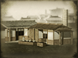
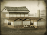

Requires
- Buildings: 
- Resources:

Enables
- Buildings: 
Basic Building Statistics (can be modified by difficulty level, arts, skills, traits and retainers)
- Cost: 3800
- +1300 to wealth generated by industrial buildings in this province
- -1 to happiness from modernisation
Clan Effects
- +1 to modernisation (clan development)
Description
The kiss of the breeze upon the skin.
A silk weaving shed adds to the wealth of a province, and helps industry to grow. Silk worms are cultivated in Japan, so this building requires no machinery from foreigners, giving the province a traditionalist air. Obviously, access to silk is required before the shed can be built. Silk was, and remains, a remarkable fabric. The silk kimono is almost a clichéd image from Japan, although during the Meiji Restoration it was a symbol of the old ways. As modernisers among the Japanese nobility, bureaucracy and merchants adopted western dress, the traditionalists were equally keen to retain the kimono and other traditional garb. This distaste for Western fashion did not normally extend to a distaste for Western firearms, and even staunch traditionalists would, quite discreetly, tuck away a revolver.